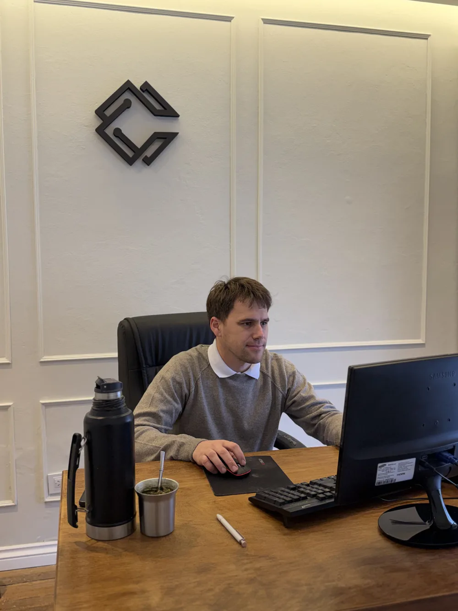
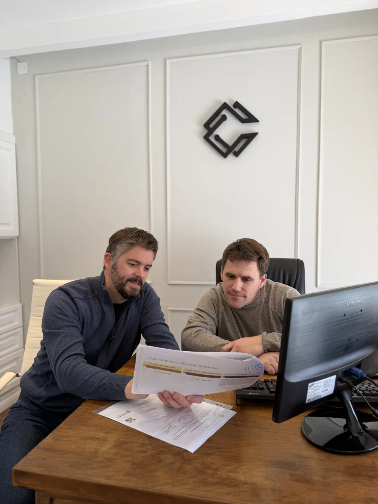
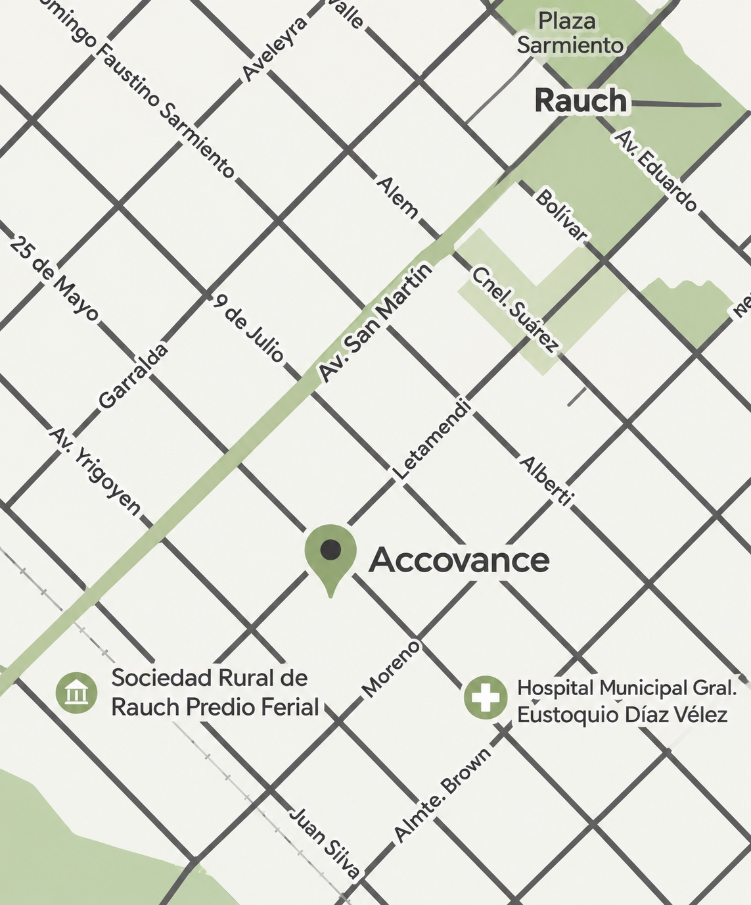

Socia fundadora
Ana Clara
Echandi
- Farmacéutica · UNLP
- Magíster en Marketing Internacional · UNLP
- Diplomada en Consultoría de Negocios para PyMEs · UBA
Consultoría Contable y Empresarial
Acompañamos a empresas y PyMEs integrando análisis contable, financiero y de gestión para detectar oportunidades que agreguen valor a la empresa, resolver desafíos y construir soluciones adaptadas a cada negocio.
Enfoque
Contabilidad, finanzas, procesos y estrategia como partes de una misma realidad.
Gestionar una empresa implica mucho más que cumplir con sus obligaciones contables e impositivas.
Rentabilidad, costos, procesos, organización, estrategia comercial y de marketing y decisiones financieras forman parte de un mismo negocio.
En Accovance integramos esas dimensiones para ayudarte a entender cómo está posicionada tu empresa, situación de base, identificar oportunidades de mejora y definir hacia dónde avanzar.
Entender. Decidir. Crecer.
Qué podemos hacer por tu empresa
Acompañamos cada decisión con análisis contable, financiero y de gestión.
No ofrecemos soluciones estandarizadas. Cada intervención parte de la realidad, los recursos y los objetivos de cada empresa.
Cómo trabajamos
Un proceso ordenado, de la mano de la empresa en cada etapa.
Conocemos la empresa, analizamos su situación e identificamos problemas, necesidades y oportunidades.
Ordenamos la información y evaluamos las distintas áreas que impactan sobre el negocio.
Definimos prioridades y desarrollamos una estrategia y un plan de acción adaptados a la empresa.
Acompañamos la puesta en práctica de las soluciones definidas.
Evaluamos resultados, realizamos ajustes y acompañamos la evolución del negocio.
Nuestro diferencial
Contabilidad, finanzas, gestión y estrategia en una sola propuesta.
Sectores
Trabajamos con PyMEs y empresas de diferentes actividades, con especial conocimiento en:
Accovance
Nacimos en la contabilidad y evolucionamos hacia la consultoría integral.
Accovance nació desde la experiencia contable y evolucionó hacia una propuesta de consultoría integral, incorporando herramientas de gestión, análisis económico, estrategia y desarrollo empresarial.
Trabajamos cerca de nuestros clientes, buscando comprender cada negocio antes de proponer una solución.
Porque detrás de cada número hay una decisión, y detrás de cada empresa, una realidad diferente.
Socios fundadores
Contabilidad, gestión y estrategia en una misma forma de acompañar.
Socia fundadora

Socio fundador
Socios estratégicos
Nos rodeamos de especialistas y aliados que complementan nuestra mirada y aportan experiencia en distintas áreas del negocio.

Preguntas frecuentes
Respuestas breves para entender cómo trabajamos.
Contacto
Cada organización tiene desafíos diferentes.
Una primera conversación puede ayudarnos a conocer tu situación, identificar necesidades y evaluar de qué manera podemos acompañarte.
